Data Structures and Algorithms
with Object-Oriented Design Patterns in Java
Data Structures and Algorithms
with Object-Oriented Design Patterns in JavaIn the introduction to this chapter it is stated that there are myriad applications of graphs. In this section we consider one such application--critical path analysis . Critical path analysis crops up in a number of different contexts, from the planning of construction projects to the analysis of combinational logic circuits.
For example, consider the scheduling of activities required to construct a building. Before the foundation can be poured, it is necessary to dig a hole in the ground. After the building has been framed, the electricians and the plumbers can rough-in the electrical and water services and this rough-in must be completed before the insulation is put up and the walls are closed in.
We can represent the set of activities and the scheduling constraints using a vertex-weighted, directed acyclic graph (DAG). Each vertex represents an activity and the weight on the vertex represents the time required to complete the activity. The directed edges represent the sequencing constraints. That is, an edge from vertex v to vertex w indicates that activity v must complete before w may begin. Clearly, such a graph must be acyclic.
A graph in which the vertices represent activities
is called an activity-node graph .
Figure  shows an example of of an activity-node graph.
In such a graph it is understood that independent activities
may proceed in parallel.
For example, after activity A is completed,
activities B and C may proceed in parallel.
However, activity D cannot begin until both B and C are done.
shows an example of of an activity-node graph.
In such a graph it is understood that independent activities
may proceed in parallel.
For example, after activity A is completed,
activities B and C may proceed in parallel.
However, activity D cannot begin until both B and C are done.
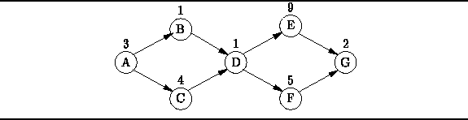
Figure: An activity-node graph.
Critical path analysis answers the following questions:
The activity-node graph is a vertex-weighted graph. However, the algorithms presented in the preceding sections all require edge-weighted graphs. Therefore, we must convert the vertex-weighted graph into its edge-weighted dual . In the dual graph the edges represent the activities, and the vertices represent the commencement and termination of activities. For this reason, the dual graph is called an event-node graph .
Figure shows the event-node graph
corresponding to the activity node graph given in Figure .
Where an activity depends on more than one predecessor
it is necessary to insert dummy edges.
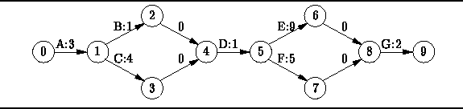
Figure: The event-node graph corresponding to Figure .
For example, activity D cannot commence until both B and C are finished. In the event-node graph vertex 2 represents the termination of activity B and vertex 3 represents the termination of activity C. It is necessary to introduce vertex 4 to represent the event that both B and C have completed. Edges 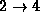 and 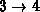 represent this synchronization constraint. Since these edges do not represent activities, the edge weights are zero.
For each vertex v in the event node graph we define two times. The first 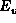 is the earliest event time for event v. It is the earliest time at which event v can occur assuming the first event begins at time zero. The earliest event time is given by
where  is the initial event,
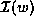 is the set of incident edges on vertex w
and C(v,w) is the weight on vertex (v,w).
is the initial event,
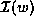 is the set of incident edges on vertex w
and C(v,w) is the weight on vertex (v,w).
Similarly, 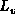 is the latest event time for event v. It is the latest time at which event v can occur The latest event time is given by
where 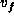 is the final event.
Given the earliest and latest event times for all events, we can compute time available for each activity. For example, consider an activity represented by edge (v,w). The amount of time available for the activity is 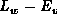 and the time required for that activity is C(v,w). We define the slack time for an activity as the amount of time by which an activity can be delayed with affecting the overall completion time of the project. The slack time for the activity represented by edge (v,w) is given by
Activities with zero slack are critical . That is, critical activities must be completed on time--any delay affects the overall completion time. A critical path is a path in the event-node graph from the initial vertex to the final vertex comprised solely of critical activities.
Table gives the results from obtained from
the critical path analysis of the activity-node graph
shown in Figure .
The tabulated results indicate the critical path is
| activity | C(v,w) | 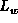 | S(v,w) | |
| A | 3 | 0 | 3 | 0 |
| B | 1 | 3 | 7 | 3 |
| C | 4 | 3 | 7 | 0 |
| D | 1 | 7 | 8 | 0 |
| E | 9 | 8 | 17 | 0 |
| F | 5 | 8 | 17 | 4 |
| G | 2 | 17 | 18 | 0 |
 Copyright © 1998 by Bruno R. Preiss, P.Eng. All rights reserved.
Copyright © 1998 by Bruno R. Preiss, P.Eng. All rights reserved.